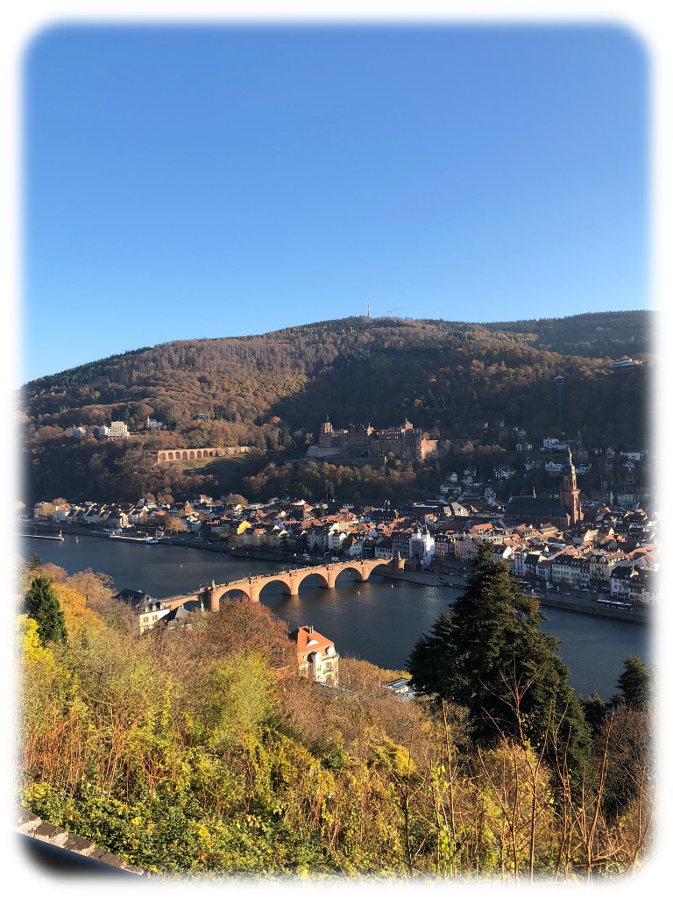
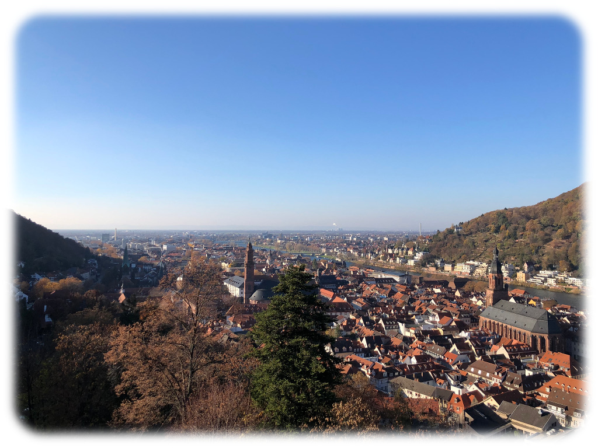
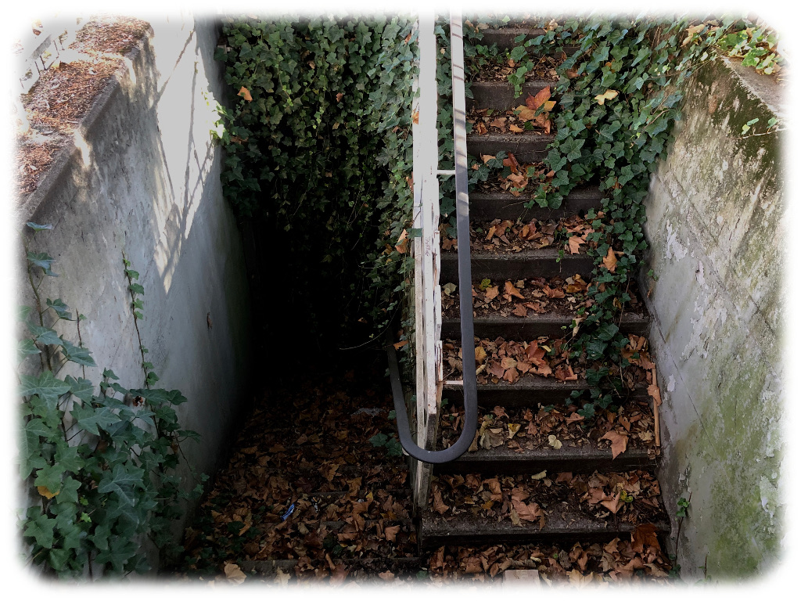
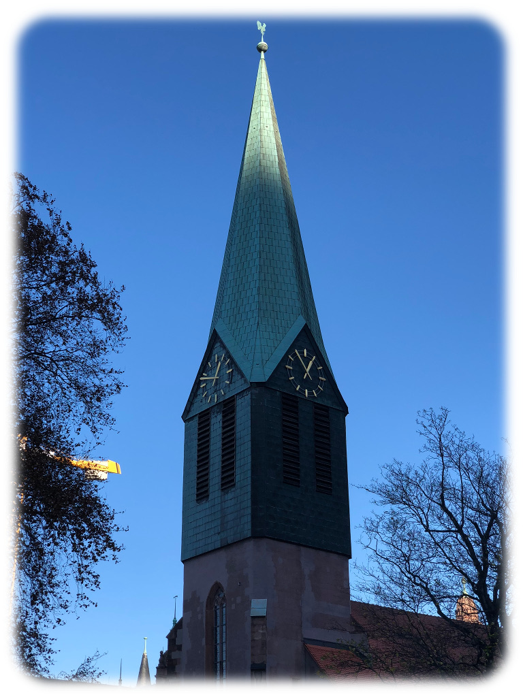
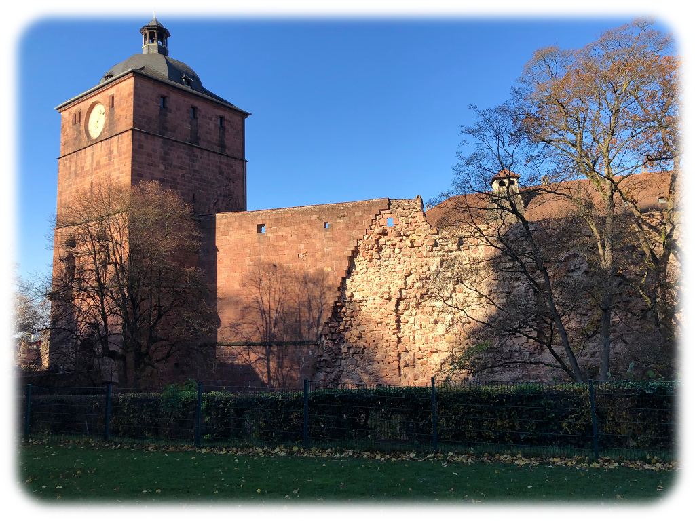
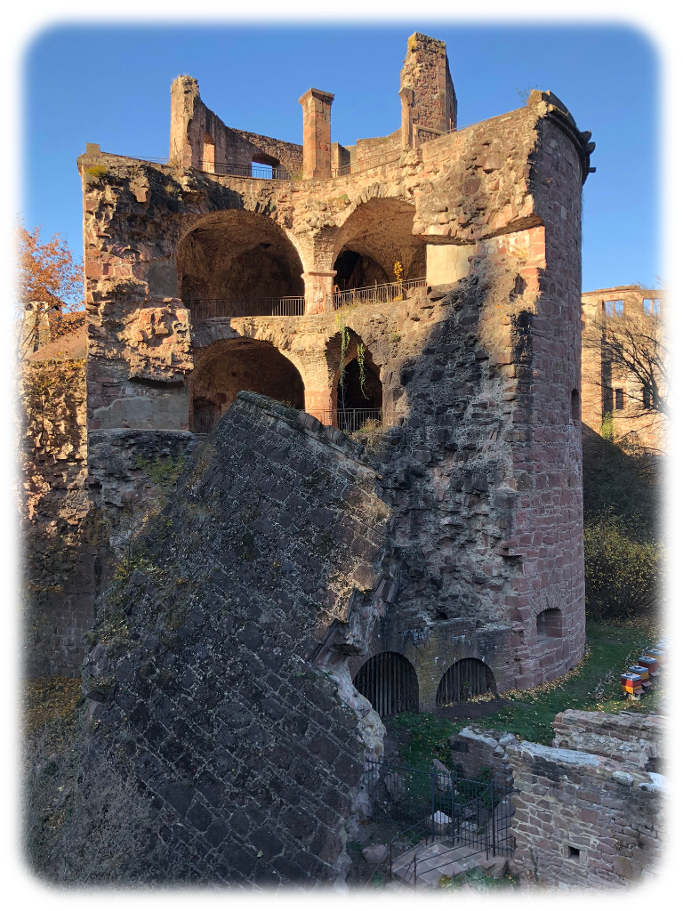
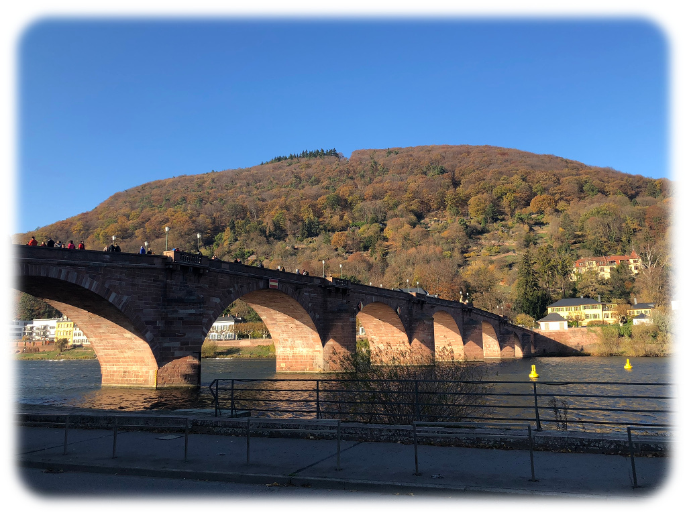
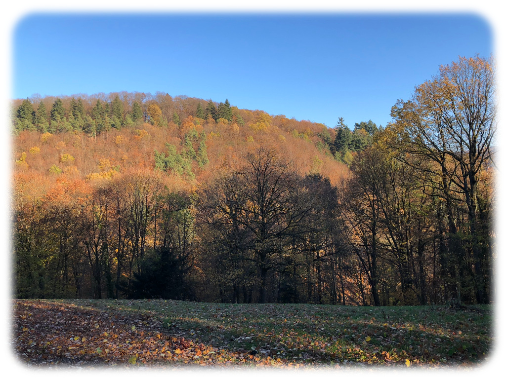

Nach Heidelberg
November 17, 2018
Day Tripper
After two weeks of Freiburg, I’m settling in nicely. Though the cold is creeping in like fog over a mountain, and soon snow will be free to blanket the city, I’m keeping warm as best I can. And it turns out that in more ways than one, heading up north to Heidelberg was a great way to do that.
I spent the last weekend doing largely nothing at all. My excuse was that I was getting settled, and in large part that was true, but there’s only so much hiking and cafe-going I could do before I started to get city-fever. I’d been meaning to take plenty of trips — I have multiple friends who’ve given me entire lists of places to see — but I was still a little too reclusive the first weekend to cross any of them off.
Obviously that wouldn’t do. I was initially planning to take a train to Munich on Friday, stay somewhere for two days, and then come back early Sunday, seeing Castle Neuschwanstein and the Bodensee on the way back. Unfortunately, that turned out to be a nightmare of planning and seemed close to impossible to do with public transit, so I’m shelving it. My parents are visiting for the holidays, and they’re renting a car — it makes a lot more sense to put the Munich trip off until then.
Heidelberg, though, is only two and a half hours away, half as far as Munich and doable in a day trip. So I set off today with a rough plan of some things I wanted to see, hopped on a double-decker bus, and left the (actually) freezing fog of Freiburg for the almost-not-cold clear skies of Heidelberg.
Fallen Kings
According to Wikipedia, Heidelberg means Goat Mountain, and while I can’t speak to the goats, the mountain part — the berg — is clear. Heidelberg is sort of nestled up against the foothills of the black forest, the oldest parts (like the castle) up on the slope itself, and the city becoming newer and newer as it stretches away.


{kind=link}
{kind=link}
A view of the castle and a view from it. Heidelberg is smaller than Freiburg in both population and area, but these pictures make it look quite the opposite.
I raced from the bus station two miles to the castle. I was intent on making it in time for one of the tours that started hourly — I didn’t have time to wait if I was late.


{kind=link}
{kind=link}
{kind=link}
{kind=link}
My goodness, the castle. It’s hard to explain just how grand it is without pictures, and even then, they don’t do it justice. Schloss Heidelberg isn’t even large for a German castle, but it’s jaw-dropping to see in person.
{kind=link}
{kind=link}
{kind=link}
{kind=link}
The same tower from two different angles.


{kind=link}
{kind=link}
Yes, really.
{kind=link}
{kind=link}

It turns out you can see most of the castle without buying a ticket to the inside. I was almost about to leave when I decided I’d probably never be back again, and so I might as well see what was in there. The views were indeed remarkable, but what was incredible and absolutely unbelievable was that I ran into a friend of mine from my German class at Cal Poly. She is currently studying in Berlin, and was only visiting Heidelberg for the weekend with her mother, who was passing through. I must know fewer than ten people in this country who I didn’t meet here. The chances of ever, ever running into someone I know are beyond ludicrous. It may well be the biggest coincidence of my life, or at the very least this year.
Wandering Philosophers
I left the castle after half an hour of catching up, and I made my way to Philosophenweg, a path that snakes into the Black Forest for a few miles and conveniently ends up near the bus station. So I crossed the river Neckar on the famous Alte Brücke, walked the path philosophers supposedly loved, crossed back over, found a cafe, and worked on a sandwich and a chapter in two very different ways.


{kind=link}
{kind=link}
{kind=link}
{kind=link}
And after five hours in Heidelberg, it was time to leave. It was exactly what I was looking for and more — a breath of fresh air and sights, and a reunion with a friend I didn’t even know was in the country. I doubt I’ll be back, but Heidelberg will stick with me for quite a while.
Feeling wheels on my old road
Feeling bought for what I sold
I had a dream you were two towns from me
Got to sleep, spent the whole night running
Blind Pilot, Two Towns From Me